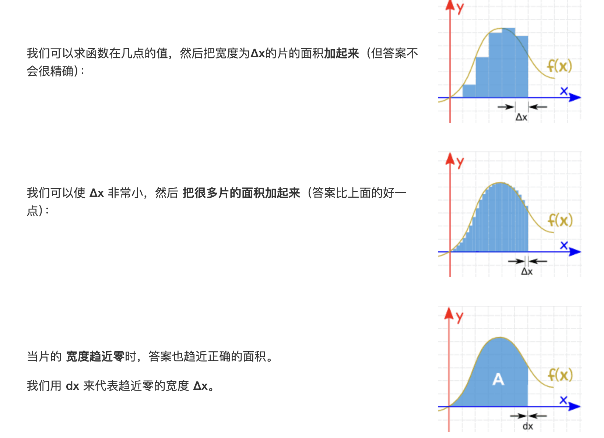

# 积分
积分就是反向导数，求积分就是求函数的面积

记作

把要求积分的函数（叫被积函数）放在积分符号后面，
最后放 dx 来代表积分的方向是 x（片沿 x 的宽度趋近零）。
我们这样写答案：
∫2xdx=2x2+C
# 法则
| 常用函数 | 函数 | 积分 |
|---|
| 常数 | ∫a dx | ax + C |
| 变量 | ∫x dx | x2/2 + C |
| 平方 | ∫x2 dx | 3x3+C |
| 倒数 | ∫(1/x) dx | ln | x | + C |
| 指数 | ∫ex dx | ex + C |
| ∫ax dx | ax/ln(a) + C |
| ∫ln(x) dx | x ln(x) − x + C |
| 三角法 （x 的单位是 https://www.shuxuele.com/geometry/radians.html） | ∫cos(x) dx | sin(x) + C |
| ∫sin(x) dx | -cos(x) + C |
| ∫sec2(x) dx | tan(x) + C |
| | |
| 法则 | 函数 | 积分 |
| 乘以常数 | ∫cf(x) dx | c∫f(x) dx |
| 幂次数法则 (n≠-1) | ∫xn dx | xn+1/(n+1) + C |
| 和法则 | ∫(f + g) dx | ∫f dx + |
| ∫g dx |
| 差法则 | ∫(f - g) dx | ∫f dx - |
| ∫g dx |
# 分部积分法
分部积分法是一个特别的积分方法，最适用于积分两个函数的积，但在其他的情况下也会有用。
∫uvdx=u∫vdx−∫u′(∫vdx)dx

其中 U 和 V 这两个代表函数可以对调
# 例子：∫x2ln(x)dx 是什么？
先选 u 和 v：
u=ln(x)v=x1ln(x)′=x1∫x21dx=∫x−2dx=−x−1=x−1

其中x1(x−1) 先做乘法再积分
x−ln(x)−∫x2−1dx=x−ln(x)−x1+C
# 例子二：∫exsin(x)dx
u=sin(x)v=exu′=cos(x)∫exdx=ex∫exsin(x)dx=sin(x)ex−∫cos(x)exdx
在∫cos(x)exdx 这里函数里面再做一次分部积分
u′=−sin(x)∫exdx=ex∫exsin(x)dx=sin(x)ex−(cos(x)ex−∫−sin(x)exdx)∫exsin(x)dx=exsin(x)−excos(x)−∫exsin(x)dx2∫exsin(x)dx=exsin(x)−excos(x)∫exsin(x)dx=ex2(sin(x)−cos(x))+C
# 换元积分法
适用于可以写成一个特定格式的函数，后一个是前一个导数，就可以变成
∫f(g(x))g′(x)dx∫f(u)du
# 例子：∫x2+1xdx
解：
∫x2+1x dx=21∫x2+112x dxu=x2+1u′=2x21∫u1du21∫u1du=21ln(u)+C=21ln(x2−1)+C
# 积分近似值
# 梯形法
对于一些比较难求的积分，我们可以帮他拆分成一片片来计算，其用公式是

2Δx×(f(x0)+2f(x1)+2f(x2)+...2f(xn−1)+f(xn))
Δx 就是每个相间的大小
# 辛普森公式
最终的公式和梯形法差不多（不同的是除以 3 以及用 4,2,4,2,4 的因子规律）：

\frac{\Delta x}{3}\times( f(x_{0}) + 4f(x_{1}) + 2f(x_{2}) + ... 4f(x_{n-1}) + f(x_{n}) ) $$}{3}\times( f(x_{0}) + 4f(x_{1}) + 2f(x_{2}) + ... 4f(x_{n-1}) + f(x_{n}) )